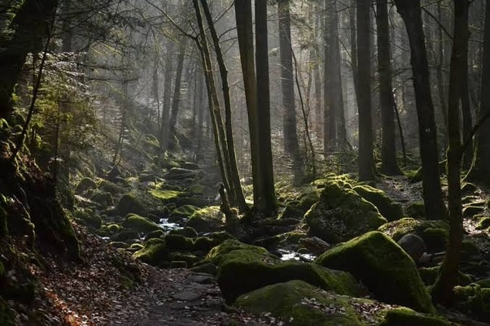

Step into a world of mystery and exploration, where the unknown awaits around every corner. Our Black Adventure destinations are perfect for those who crave excitement, challenge, and the thrill of discovery. Whether you're venturing into dark caves or exploring dense forests, our adventures offer something for every daring explorer.
Explore the rugged wilderness, dense forests, and mysterious caves. Each location offers a unique blend of adventure and intrigue, perfect for those who seek something different.
"The cave exploration was an unforgettable experience! It was thrilling to venture into the unknown and discover hidden wonders." - Sherin
"Staying in a treehouse in the middle of the forest was an adventure in itself. Loved every moment of our Black Adventure!" - Ken.
Prefer a more serene destination? Switch to the White Paradise or return to the Home Page to explore more options.